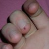

My desk...on a good day. Talk about primordial chaos. |
My table at the "Whimsical Women" Art Show and Sale, December 2004. This was my first real show. |
Me being knighted by King Henry the Red, at the Silverleaf Rennaisance Faire. |
My full outfit (and a war hammer). Is that my war hammer? I wish. |
"Vilhelm the Viking." My little brother dressed up in my chainmail for his Culture Appreciation Day at school. I bet the teachers didn't see that coming when they told students to "wear a costume!" |
Grand Valley State University Renfaire 2006-- my first actual renaissance faire, not craft show. Oh, and I loooves my new sign, yay! |
The mannequin that we set up to guard the front porch on Halloween night 2006. |
 A sample of the risks we maillers face daily. This is a blood blister from a really bad case of wirewhip. By the time I stopped uttering expletives, there was already a pronounced dark spot on my finger. |
My favorite mustard brand. Actually, I don't like mustard at all, but the jars make really great ring containers. |
I discovered the uber-zoom feature on my camera and used it to make some potential avatars. But I'm happy with my current one, so these are up for grabs. Use them if you like, that'd be cool. |
Another year at the Whimsical Women show. Always a great venue. |
{kind=link}
{kind=link}
{kind=link}
{kind=link}
{kind=link}
{kind=link}
{kind=link}
{kind=link}
{kind=link}